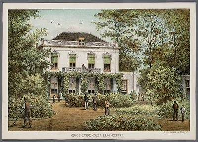
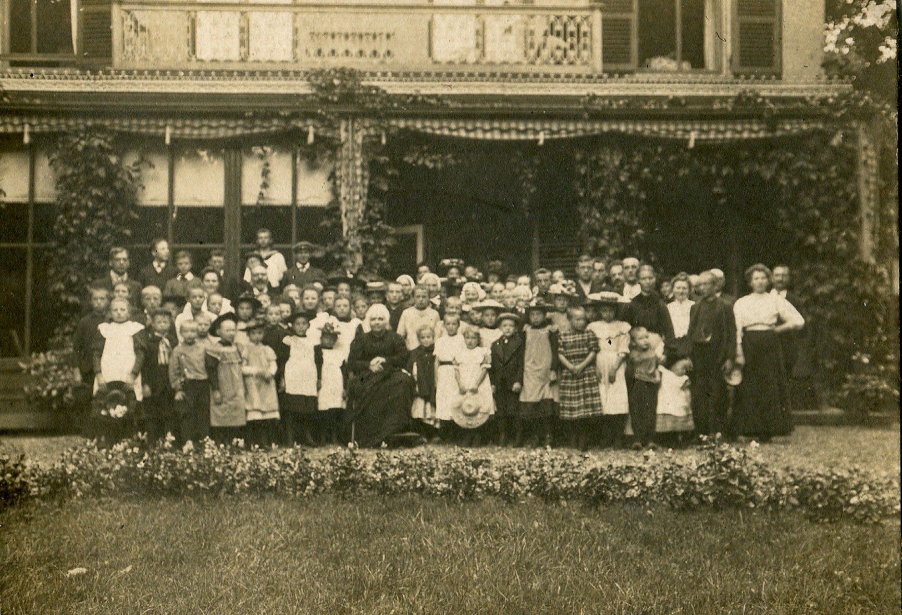
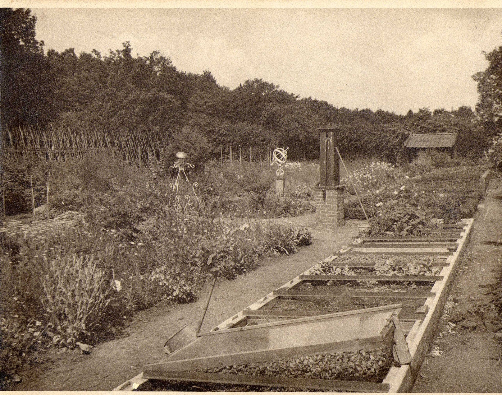
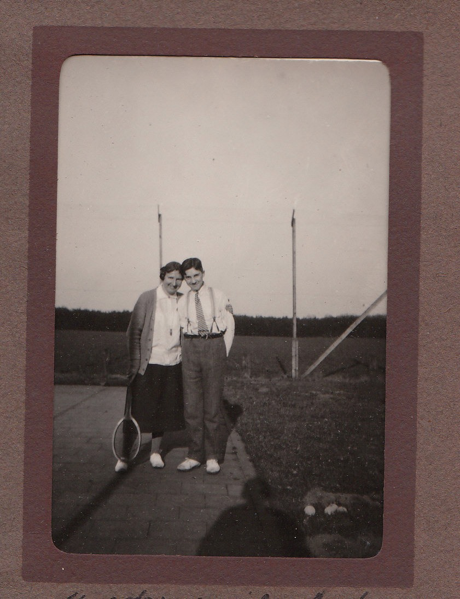
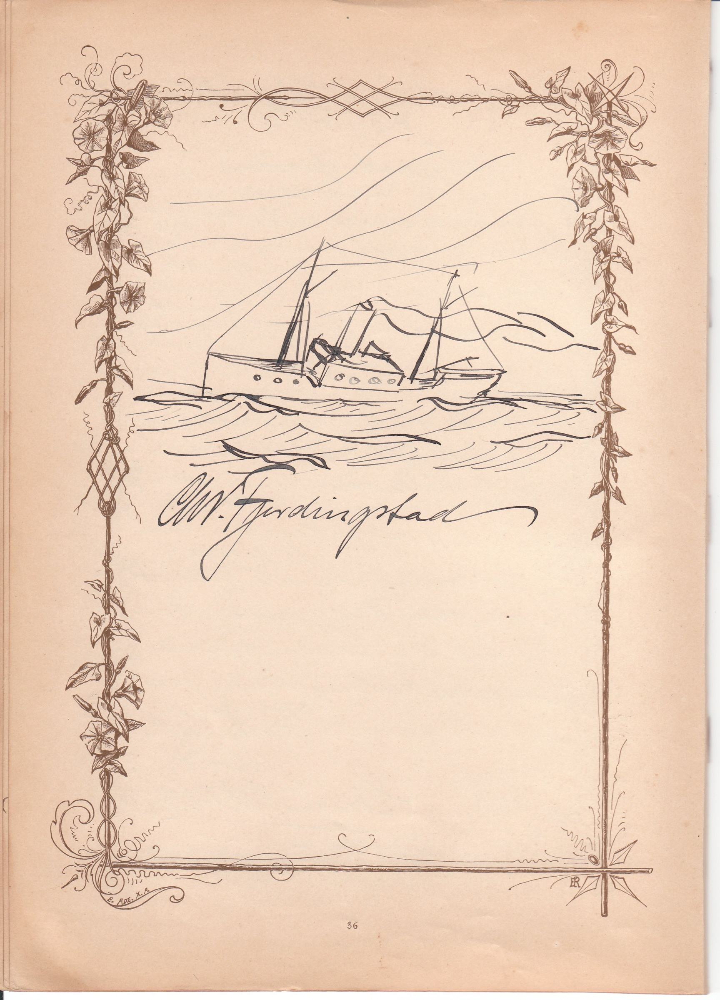

Historisch artikel · Achterhoek
Groot Zande
Het huis, zijn bewoners en entourage in de Achterhoek
Aan de weg tussen Hummelo en Langerak stond Groot Zande. Van 1910 tot 1960 was het landhuis de thuisbasis van de familie Coops–Von Weiler tot Poelwijk. Foto’s, het gastenboek, oorlogsdagboeken en eigendomsakten laten zien hoe het huis werd bewoond en wat er na het vertrek van de familie mee gebeurde.
‹ Alle biografieën en historische artikelen01 / Huis en ligging
Een landhuis aan de Keppelseweg
Het landhuis werd in 1862 gebouwd op grond die volgens de vroegste kadastrale registratie op naam stond van Adolph Werner Carel Willem baron van Pallandt. Hendrik Antonie Zwier baron van Knobelsdorff legde de eerste steen. Hij huwde in 1863 Adelaïde Jeanne Henriette barones van Pallandt. Het echtpaar woonde op Groot Zande. De akte van scheiding en verdeling uit 1879 wees het buitengoed toe aan haar broer Floris. [2]


Jacobus Craandijk beschreef in 1880 hoe het landhuis met zijn hoge bomen en verzorgde aanleg opviel naast het tolhuis en de veel bescheidener huizen langs de weg. Het boek over Groot Zande volgt die omgeving tot aan het huis zelf, met een rondleiding langs de vertrekken, het koetshuis, de boomgaard en de moestuin. [1] [4]


02 / Bewoners
Appie, Ammie en hun gasten
De familie Coops kende het huis al vóór de verhuizing. In 1899 trouwde Margot Coops, zus van Jacobus Pieter, met Otto Gunning. De huwelijksbijbel verbindt hun trouwdag met Groot Zande. In 1910 kwamen Jacobus Pieter Coops en Caroline von Weiler tot Poelwijk er met hun drie kinderen wonen. De eigendomsakten volgen intussen een andere lijn, via Van Pallandt naar Beelaerts van Blokland. [1] [2]


Achter de boomgaard lag de tennisbaan. Het familiearchief bewaart foto’s van partijen en van het paasvuur van 8 april 1928, gefotografeerd door Jan Chris. Het gastenboek begon in Den Haag en werd op Groot Zande voortgezet. Het bevat bijdragen van bezoekers en sporen van de muziekmiddagen die Caroline organiseerde. Volgens de agenda van Jan Chris trok een pianomatinée van Willem Andriessen op 13 januari 1938 zeventig bezoekers. [1] [3]





03 / Oorlogsjaren
De bevrijding gezien vanuit het huis
Het dagboek van mevrouw Westerbeek van Eerten geeft het perspectief van een buur. Op 10 mei 1940 hoorde zij vroeg geschut en zag zij boven Laag-Keppel rook opstijgen. Zij noteerde ook dat er bij Groot Zande bomen over de weg waren gevallen. [5]
In de laatste oorlogsmaanden bood Groot Zande onderdak aan meer mensen dan het eigen huishouden. Zoon Jan Chris en zijn vrouw Renée kwamen er wonen nadat zij hun huis in Doetinchem moesten verlaten. Ook de familie Cremers verbleef er een tijd. [1]
De oorlogsdagboeken en familieherinneringen laten de bevrijding op het erf zien. Op 2 april 1945, tweede paasdag, verschenen Canadese tanks voor het huis. Een gewonde werd binnengebracht. Later die dag werden in de moestuin mortieren opgesteld om richting Keppel te schieten. De kinderen sliepen beneden. De volwassenen hielden om beurten de wacht. [1]
Ruim een week later noteerde Appie dat het werk voor tram en leeszaal weer op gang kwam. Hij begon ook het begraven zilver, koper en porselein op te graven. De tuinman keerde terug en het herstel van de moestuin kreeg voorrang. [1]
04 / Eigendom en afbraak
Na het vertrek van de familie
Jacobus Pieter overleed in 1957. Caroline en dochter Jijs verlieten Groot Zande in 1960. Daarna woonde de familie Van der Werff er. In januari 1971 droegen de erfgenamen Beelaerts van Blokland de villa over aan Johan Hof. In april dat jaar verkocht hij de buitenplaats aan Rients Schootstra. In die laatste akte worden het hoofdgebouw en het koetshuis nog genoemd. [2]
Toen kleindochter Cordula in 1974 terugkwam, trof zij een lege plek aan. De overdrachtsakte uit 1977 spreekt alleen over grond. Samen begrenzen die bronnen de afbraak van het landhuis tot de periode tussen april 1971 en het bezoek in 1974. [2]
In 2011 verscheen Willem Coops’ boek Groot Zande. Het huis, zijn bewoners en entourage in de Achterhoek. Het brengt de herinneringen aan het huis samen met onderzoek naar de eigenaren, foto’s en stukken uit het familiearchief. De biografie van Jacobus Pieter gaat dieper in op zijn werk en verenigingsleven.
Verantwoording
Bronnen en beeldmateriaal
- Willem Coops, Groot Zande. Het huis, zijn bewoners en entourage in de Achterhoek (2011), definitieve boekversie en manuscript. Rondleiding, familieherinneringen, oorlogsjaren, gastenboek en seizoensgebruiken.
- Kadasterstukken en historische eigendomsakten in het dossier Groot Zande. Zie ook de eigendomsreconstructie in de appendix Eigenaren van Groot Zande van het boek.
- Familiearchief Coops. Foto’s van huis, tuin, tennisbaan en paasvuur, gastenboek, knipsels en herinneringen.
- Jacobus Craandijk, Wandelingen door Nederland met pen en potlood, deel 5 (Haarlem, 1880), blz. 281–282.
- Oorlogsdagboek van mevrouw Westerbeek van Eerten, aantekening van 10 mei 1940, afschrift in het dossier Groot Zande.